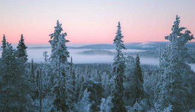

The places to go when you're looking for adventure
Weather Gallery
The ever changing weather in Idaho leaves lots of beautiful sunsets with multi-color clouds in the skyIdaho is a generally always at a dry climate, except for when Spring comes, when mutliple thunderstorms appear
all around IdahoDepending on where you are in Idaho you may get to experience the rare sight of a rainy dayThe weather year round, almost 75% of the time, is sunny and warmThose few rain and thunderstorms seen in Idaho will produce the most beautiful rainbows you will ever see

When winter comes around, Idaho experiences a lot of snow that lasts for months, even into what should be
considered Spring time